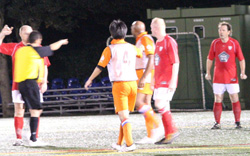
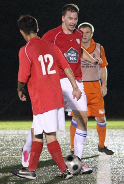
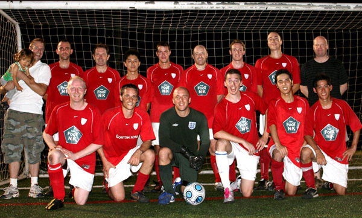

|
YCAC, Sunday 29th August

Finally, after the ennui of the world cup (apart from the England bits – tee hee) we got back to the stuff that matters. A relatively impromptu gathering of certain Vags alumni as of a Friday evening in some subterranean area of fashionable Hammamatscho brought forth reminisces of self injury during childhood and later life. Assorted tidbits were: Axed himself in the forehead whilst chopping wood upwards / Tested how far his finger could go in a mangle before getting caught – it did / Attempting to solve a mysterious blockage in a science lab by running a Bunsen burner along the highly combustible filled tubing (goggles off cause it wasn’t cool) / Stabbing himself through the foot with a pitchfork whilst telling his younger brother that he was too young for this kind of thing……….Christ…it’s a wonder anybody in the team can kick the ball in the right direction, never mind score goals and win games.
But we made it, as a largely unchanged squad, down to the YCAC for the season’s opener….a couple of key players have left, at least for now, 1 because of a combination of knee injury, buying a house & having a baby (well….involved in having a baby) – which is, I guess, fair enough. The other is because he has got a good job in Hong Kong – which is out of order really. Still we have to look on the bright side and a couple of recruits were to do very well on their Vags debuts. Toshi, who looked sharp, as well as getting a goal and Steve Good, who was more than very comfortable all through the second half.
When informed of the latter new addition one of the custodians of the club did actually pull out a cheeky little bit of repartee (he shall remain nameless, but for those who do the Sunday times cryptic – it is an anagram of Adrina Thomsa) – the old chestnut ‘Maradona good, Pele better, George Best’ can now be applied to the Vags ‘Ged crap, Wayne average, Steve Good’. Boom, boom….who needs morale eh?

Anyway, to the game…last season we had a life shortening plethora of nerves and ditto for goals – finishing a see-saw battle 5-3. Who would have thought it would happen again eh? My doctor won’t be happy.
Vags started off with their usual 3-5-2, not because of the tactical genius involved but more to do with the fact that we only ever have 3 defenders. Ever.
Things started evenly enough and it was apparent that the Dutch had recruited a lot and were a notch above their level last season. Very quick in midfield with sharp incisive passing – if they can keep this together they will do well in this league this year. It was 50/50 until Vags got the first of three penalties in the first half. Ken broke right and crossed and the ball caught/was knocked down by the arm of a defender...Graham inched forward to take the penalty but fortunately Ken stood firm and dispatched it into the net high left as he was standing. A second penalty followed after 20 minutes, again for handball, and Ken again stepped up – same place same result.
I was very impressed with the Dutch’s homework of how to play us – the perfect strategy is just give us a two goal lead and then watch us implode, pegging back the 2 is a given and then they’ll have their tails up and go for the kill. The two pulled back were (if I have my order correct) a long ball down the right and far too much space given to the winger who finished well. The second was a penalty – for what I am still not sure – anyway you know it’s softer than a witch’s tit when the opposition don’t even raise a shout. On the other hand we had had two and in some games wouldn’t have had any so perhaps a bit of evening up was the name of the game. It was put away with nary a wrinkle nor a teat.
The Dutch plan floundered though, as we then went ahead with a stonking header from Ollie off of a corner – bulleting back across goal and into the bottom corner from a difficult angle. Set pieces looked dangerous all night.
The Dutch rallied again, however, and after getting the break of the ball they finished superbly and it was back to 3-3. It wasn’t even half time.
The second half settled down and clear chances were much rarer. We were treated to a comedy moment when Wayne managed to get himself sent off when he was linesman. A bit of confusion over the job of linesmen in the TML led to an altercation with the ref and a bit of ‘foul and abusive language’ followed – yellow card….this wasn’t appreciated by Mr. Baxter and he said so fouly and abusively….red card. So…down to 11 men (?!) the game went on.
Takuma had been looking very lively after coming on at half time and he was to prove the decisive factor. Good pushing throughout by the Vags always threatened to pay off and Takuma stepped up with a sweet strike from 18 yards off the inside of the keeper’s right-hand post about midway through. Vags looked relatively comfortable though the Dutch were always lively in midfield.
In the final minute Takuma broke away on the left and the Dutch were exposed as they now had to push on, Takuma beat his man….there were claims he pushed yer man over two handed with both arms extended but, funnily enough, Fergusonesquely, I didn’t see the incident because I was tying my shoelace and scratching my arse whilst checking the pressure of the spare balls on the sidelines. I confess to hearing an awful thump when the non Dutch Dutchman hit the ground though. Anyway………………PLAY TO THE WHISTLE….and that is exactly what the good Mr. Ozeki did…drawing the defender before slipping a perfect pass to Toshi who drew the keeper and slotted home well…painting a rosy picture on a game etched with some really good play.
Worthy mentions should go to just about all for digging us through a tough opener but anyway, Tom was fantastic in the holding role and Ken was a lot more than a couple of penalties, obviously. Muzzy ran his socks off…..which was quite difficult because they were ensconced in some poofy looking pink boots and it’s worth another Takuma snippet of praise for his danger going forwards. Nice to see Pabs in a cameo Vags appearance too!
Home is where the heart is.
Good start and bye bye Darren…..
Report by Richard Straughan

|